- 发帖数量：15 条（均为星主 Jason不跪 本人发布，共 44 张图）
- 时间范围（美西时间 PDT）：2026-10-21 12:18 – 15:36（对应北京时间 10-22 03:18 – 06:36）
- 筛选口径：只收录晚于 2026-10-21T06:35:49.135+0800 的帖子（该时刻本身的那条是上一期最后一帖，不重复收录）。
- 说明：本期全部数据来自帖子正文与截图，未另行核验；带“估算 / 推算”字样的数字是我自己根据原图数字做的粗算，不是原文。内容仅作学习用途，不构成投资建议。
今日要点速览
中国正处在“人口见顶 + 房价下行 + 居民不敢花钱”的低利率长周期里：钱从房子和股票流向国债与债基，10 年期国债收益率已压到 1.63% 左右，央行也把短期政策利率锚从 7 天挪向隔夜。 今天的帖子像一条拼图线：先是林采宜的“三不”、全国 13 城二手房挂牌价、新西兰房价这三篇讲房地产的下行逻辑，再是青年失业率、穆迪的生育率与老龄化图表，说明为什么需求端难以靠短期政策扭转；中间穿插野村（央行利率框架）、一财（债基热）、高盛（外汇净流入）、JPM 与国盛（中国创新为什么还没变成股东回报）等“钱往哪里走”的研究。国际上则有两条线：高盛看央行持续买金、美银看铜见顶风险与油金走势分化，以及彭博报道的俄罗斯柴油输美与俄乌三边谈判重启；最后用人大财税所的晚清财政分析和《雍正王朝》第 29 集“过紧日子”收尾，提醒我们看财政不要只看账面收支，而要看“谁有钱、谁有责”。
帖 1 · 2026-10-21 12:18（美西）· 林采宜：未来两年的“三不”
林采宜认为：在人口下降、收入增速放缓、资产回报偏低的环境里，未来两年“买房、创业、跳槽辞职”这三种需要“加杠杆、加风险”的选择，都不划算，更好的策略是守住现金流、调整心态。读全文收起
帖子原文
林采宜： 未来两年，三不：不要买房、不要创业、不要辞职

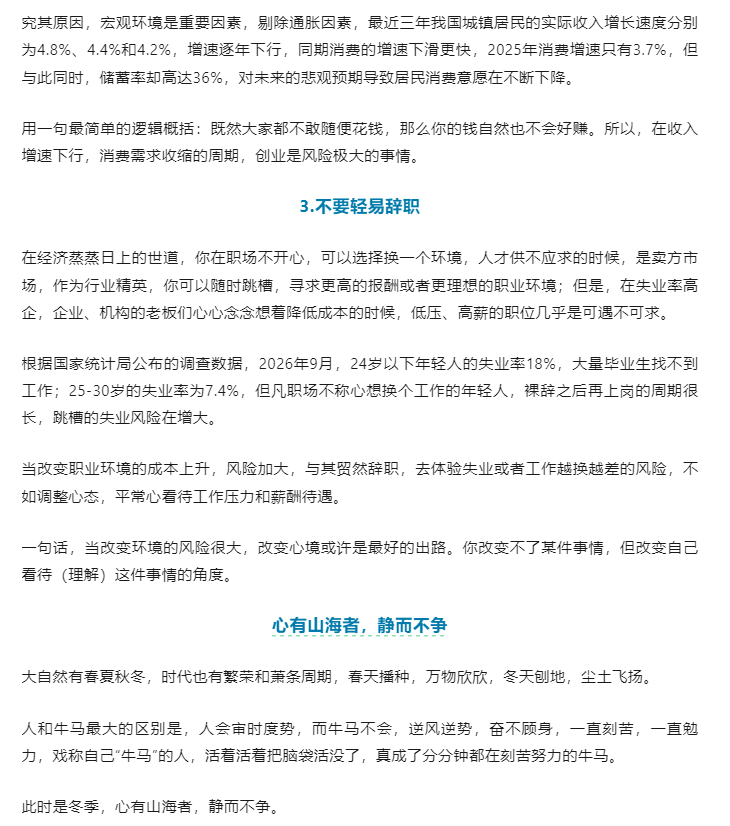
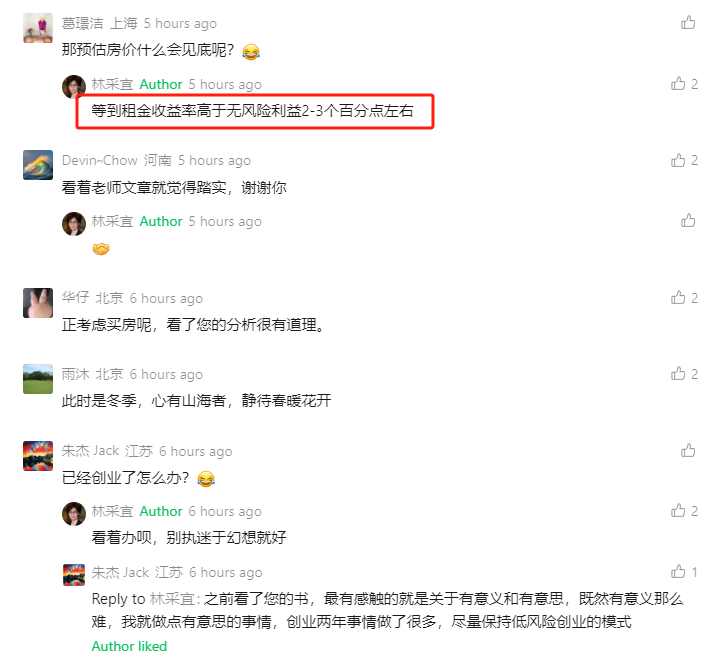
（无话题标签；3 张图：文章前两页 + 一张评论区截图。）
背景与关键数据
文章按三条逻辑展开，我把关键数字整理如下：
1. 不要买房（尤其是贷款买房）
- 房价长期由“城市人口 × 居住需求”决定。2025 年全国出生 792 万、死亡 1131 万，总人口净减少 339 万（792 − 1131）。
- 以上海为例：2025 年出生 10.7 万、死亡 16.4 万，自然增长率 −0.24%；本地户籍人口总和生育率约 0.66（意思是平均每位女性一生只生 0.66 个孩子，远低于维持人口所需的 2.1）；外来常住人口 974.5 万，比 2024 年减少 8.99 万。结论：“增量住房”的需求在逐年减少。
- 租售比 1:65、年化租金收益率约 1.8%（原文两处口径略有差异：1:65 折算约 1.5%，文中另写 1.8%）。她拿它与“无风险收益”比：文章说美元国债收益率已超过 5%，最低房贷利率也超过 3%。如果借 3% 的钱去买收益只有 1.8% 的资产，而且短期看不到房价大涨，这笔账就是“负息差”（专业叫法：negative carry，借钱成本高于资产现金回报，每年都在净亏）。
2. 不要创业
- 上海 2023–2025 年每年“注销企业数 / 新设企业数”在 0.93–0.97 之间，意思是平均每新开一家几乎就有一家关门；她据此推算小企业创业成活率不足 7%，93% 以上以失败告终。
- 宏观背景：城镇居民实际收入增速最近三年分别是 4.8%、4.4%、4.2%（逐年下行），2025 年消费增速只有 3.7%，而储蓄率高达 36%（文中未说明口径）。她的逻辑：“大家都不敢花钱，你的生意自然不好做。”
3. 不要轻易辞职
- 2026 年 9 月：24 岁以下青年失业率 18%，25–30 岁为 7.4%。企业都想降成本，“低压力、高薪水”的岗位几乎不存在；裸辞后再上岗的周期很长。
结语引用“心有山海者，静而不争”，把当下比作“冬季”。
图片解读
- 图 1（文章第一页）：红框标出的重点句是“城市人口对住房，尤其是增量住房的需求在逐年减少”。页面还给出租售比、与国债/房贷利率的对比。
- 图 2（文章第二页）：收入增速三年下行、消费增速 3.7%、储蓄率 36%；失业率数据；末尾“冬季”比喻。
- 图 3（评论区截图）：红框里是作者回复网友“房价什么时候见底”：“等到租金收益率高于无风险利率 2–3 个百分点左右。” 另一条回复给已经创业的人：“看着办呗，别执迷于幻想就好。”
为什么重要 / 对市场和经济的含义
这篇文章把买房从“信仰”拉回“资产定价”：房子既是消费品也是资产，资产就要看现金回报率（租金/房价）与无风险利率的差。她给出的“见底条件”很具体，也很苛刻。
做个粗算（我的估算）：如果用 10 年期国债 1.63%（见帖 10）当无风险利率，那么“高出 2–3 个百分点”意味着租金收益率要到 3.6%–4.6%，是现在 1.8% 的 2–2.5 倍；租金不变的话，房价要再降约 50%–60%。实际上租金和利率都会变动，所以这不是预测，只是说明她心里的“底”离现价还很远。这也解释了为什么 Jason 紧接着连发房价数据（帖 2、帖 3）。
延伸知识
- 资本化率（Cap Rate）与风险溢价：商业地产里，“年租金 ÷ 价格”叫资本化率，应高于国债收益率，多出来的部分就是持有不动产的风险溢价。类比：你把钱放银行拿 2%，买一间收租房只拿 1.8%，还得操心空置和维修，那就没有理由买。
- 节俭悖论：每个人都因为悲观而多存钱，加总起来反而让消费和收入一起缩水，进一步强化悲观。文中“大家都不敢花钱，你的钱就不好赚”就是它的通俗版。
帖 2 · 2026-10-21 12:20（美西）· 国信达：第 42 周住宅挂牌价
本周（第 42 周，截至 10/18）全国住宅挂牌价继续小幅下降，北上广出现小幅上涨、深圳下降；Jason 附上自制图，显示今年前 42 周 13 个主要城市二手房挂牌价全部下跌。读全文收起
帖子原文
国信达： 第 42 周，全国住宅出售挂牌价指数环比下降 0.25%，北京市挂牌价指数环比上涨 0.2%，上海市挂牌价指数环比上涨 0.16%，广州市挂牌价指数环比上涨 0.27%，深圳市挂牌价指数环比下降 0.17%。 #房价#
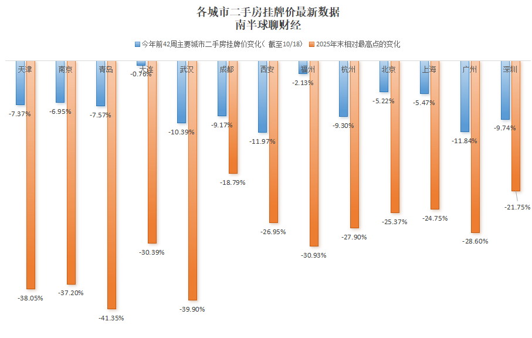
背景与关键数据
- 挂牌价 ≠ 成交价：挂牌价是卖家“开价”，成交价是“真实成交”。挂牌价更新快、容易拿到，但卖家可以“嘴硬不降”，所以它是房价的领先指标，却常常比成交价“滞后下调”。
- 环比：与上一周比；本周北京 +0.2%、上海 +0.16%、广州 +0.27%，一周的小幅波动不足以说明趋势反转。
图片解读
图是 Jason 自制的柱状图（署名“南半球聊财经”），每个城市两根柱子：
- 蓝柱：今年前 42 周二手房挂牌价变化（截至 10/18）；
- 橙柱：2025 年末相对历史最高点的变化（也就是去年底已经比高点低了多少）。
读到的数字（蓝 / 橙）：天津 −7.37% / −38.05%；南京 −6.95% / −37.20%；青岛 −7.57% / −41.35%；大连 −0.76% / −30.39%；武汉 −10.39% / −39.90%；成都 −9.17% / −18.79%；西安 −11.97% / −26.95%；福州 −2.13% / −30.93%；杭州 −9.30% / −27.90%；北京 −5.22% / −25.37%；上海 −5.47% / −24.75%；广州 −11.84% / −28.60%；深圳 −9.74% / −21.75%。
读图要点：
- 13 个城市今年全部还在跌，跌幅最大的是西安（−11.97%）、广州（−11.84%）、武汉（−10.39%）；最小的是大连（−0.76%）、福州（−2.13%）。
- 橙柱说明很多城市去年底就已从高点大幅回落（青岛 −41%、武汉 −40%、天津 −38%）。
- 粗算“从高点累计跌幅”（我把两组数连乘，非原图数字）：武汉约 −46%、青岛约 −46%、天津约 −43%、南京约 −42%、广州约 −37%；北京、上海、深圳约 −29%；成都约 −26%。一线城市的累计跌幅相对较小，但并不是“不跌”。
为什么重要 / 对市场和经济的含义
房价是中国居民资产负债表的“压舱石”：居民财富大头在房子里，房价下跌会压低“财富效应”，让人更不敢花钱（呼应帖 1）；同时地方政府土地出让收入也受影响（呼应帖 9 的财政话题）。Jason 的图在说：别被一周的小涨迷惑，今年前 42 周所有城市都在下跌，而且是在去年已大幅下跌的基础上继续跌。
延伸知识
- 价格指数怎么编：挂牌价指数通常是用大量在售房源的开价做“同类房源”比较，所以样本量大，但不等于成交；真正的“拐点”要看成交量+成交价+挂牌量（库存）三者同时企稳。
- 财富效应（Wealth Effect）：资产涨时人更愿意花钱，资产跌时相反。美国 2008 年次贷危机后，房价下跌让居民去杠杆了好几年，是同类故事。
帖 3 · 2026-10-21 13:15（美西）· ANZ：新西兰房价连跌四个月
新西兰房价已连跌四个月，ANZ 判断：买房的持有成本仍高于租房、房价收入比还有下调空间，央行还要加息三次——房市压力短期不会解除。读全文收起
帖子原文
ANZ： 2026 年新西兰房价已经从此前的横盘状态，转向持续温和下跌。9 月份经季节调整的 REINZ 房价指数环比下降 0.3%，已经连续第四个月下跌。房价收入比从 2021 年的近 9 倍回落至当前约 6 倍，已经是非常大的调整。但是，长期均值为 5.75 倍，而按照目前的长期利率水平，我们预计到 2028 年可能进一步回落至 5.5 倍左右。 我们将新购住房的利息、地税、维护等经常性成本，与租金进行比较。结论是：当前买房的持有成本明显高于租房，而且未来几年这种情况预计不会根本改变。这意味着从纯财务角度看，购房的吸引力仍低于历史正常水平。我们预计新西兰央行在 2027 年 3 月之前还会加息三次，每次 25 个基点，使 OCR 达到 3.5%。市场的隐含利率（近 4%）比我们更鹰一些。 #其他国家经济#
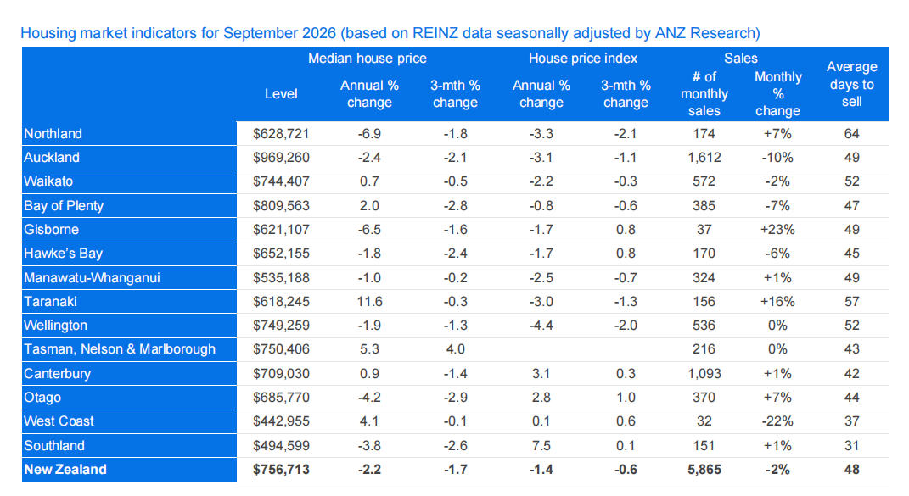
背景与关键数据
- REINZ：新西兰房地产协会（Real Estate Institute of NZ），发布房价指数；ANZ 在此基础上做季节调整。
- 房价收入比：房价 ÷ 家庭年收入。2021 年近 9 倍（疫情低利率催生的泡沫），现在约 6 倍；长期均值 5.75 倍；ANZ 预计 2028 年约 5.5 倍。
- 买 vs 租的比较（持有成本法）：把买房的利息、地税（rates）、维护等“每年必花的钱”与同样房子的租金比。买房还有“资本利得”，但 ANZ 认为当前这笔账不划算。
- OCR（Official Cash Rate，官方现金利率）：新西兰央行的政策利率。ANZ 预计 2027 年 3 月前加息三次、每次 25 个基点（0.25 个百分点），升至 3.5%（由此可反推现在约 2.75%，推算）；市场定价更“鹰”（偏向加息），隐含利率接近 4%。
图片解读
图是 ANZ 的“2026 年 9 月住房市场指标”表（按 REINZ 数据、ANZ 做季调），列包括：房价中位数、年度/3 个月变动、房价指数的年度/3 个月变动、月销量及月变动、平均销售天数。
- 全国：中位价 $756,713，年同比 −2.2%，近 3 个月 −1.7%；房价指数年同比 −1.4%，近 3 个月 −0.6%；月成交 5,865 套（环比 −2%）；平均 48 天卖出。
- 奥克兰：中位价 $969,260，指数年同比 −3.1%；成交 1,612 套，月降 10%。
- 惠灵顿：指数年同比 −4.4%，近 3 个月 −2.0%（全国最差之一）。
- 逆势区域：坎特伯雷指数 +3.1%、奥塔哥 +2.8%、南地 +7.5%——说明新西兰房价是“冷热不均”，南岛低价区更抗跌。
为什么重要 / 对市场和经济的含义
新西兰是“高杠杆房市 + 加息”的典型：当利率上行、房价却已不便宜时，购房需求被挤出。这与帖 1 的中国逻辑形成对照：不管在哪个国家，只要“买房持有成本 > 租房”，房价就缺少上涨动力。Jason 同时发这两篇，可能想表达：房价下行不是中国特例，而是全球“高估值房产遇上不便宜的利率”的普遍现象——区别在于中国还多了人口负增长这一层。
延伸知识
- User cost of housing（住房使用成本）：经济学家比较买房 vs 租房时，会把“利息 + 地税 + 折旧维护 − 预期房价涨幅”算成一个年成本，再与租金比。涨幅预期高，买房划算；涨幅预期低，租房划算。
- 利率与房价的关系：房贷利率每上升，同样月供能借到的本金就下降，等于买家“购买力”被压缩，这就是加息压制房价的机制。
帖 4 · 2026-10-21 13:28（美西）· 美银：油、铜、金技术走势分化
美银技术分析师认为：原油上涨趋势仍在、铜出现“见顶”风险、黄金还在漫长的调整中，三者不应再被当成同一个牛市故事。读全文收起
帖子原文
BOFA： 通常，人们习惯把石油、铜、黄金放在同一个“大宗商品牛市”的叙事中。但我们认为，这三种商品的技术走势已经开始分化。 如果我们的技术形态判断正确，那么铜价从报告时点进一步下跌约 10%—19%，属于可能的风险情景。我们一直维持看涨原油的立场，并且继续坚持这一判断。黄金此前经历了持续 121 周的上涨，截至本次报告，黄金已经调整约 38 周。但与之前的上涨周期相比，这段调整时间仍然相对较短。因此，黄金仍然存在形成双重调整结构的可能性。 #金融#
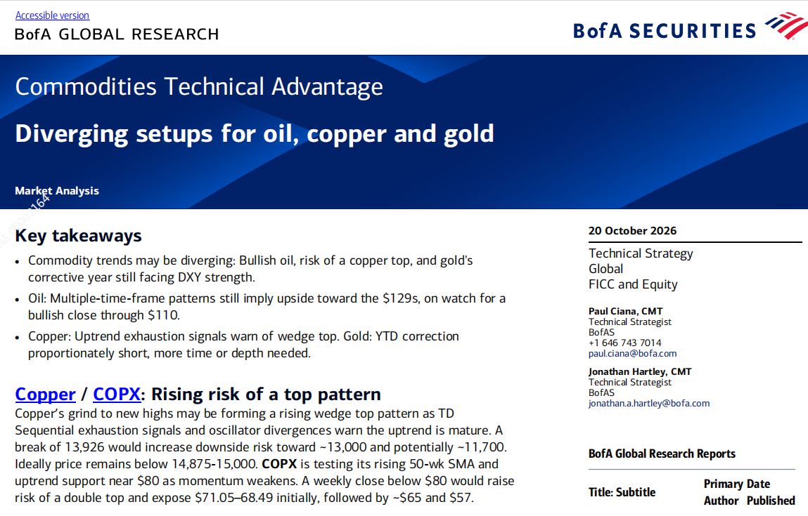
附件：PDF《Commodities Technical Advantage: Diverging setups for oil, copper and gold》（约 1.16 MB，未下载，下面仅依据帖文与首页截图）。
背景与关键数据
这是一份技术分析（用价格图形和指标预测走势，而不是用供需/利率等基本面）。截图首页（报告日期 2026-10-20）的关键要点：
- 原油：多个时间周期的形态仍指向上方 $129 附近，需关注能否“收盘站上 $110”（截图没写明具体合约，可能是 WTI 或布伦特）。
- 铜：创新高的过程可能形成“上升楔形顶”。若价格跌破 13,926，下行风险升至约 13,000，甚至 11,700；理想情况是价格继续低于 14,875–15,000。铜矿股 ETF COPX 正在测试上升的 50 周均线和趋势支撑（约 $80），若周线收盘跌破 $80，则可能形成“双顶”，目标先看 $71.05–68.49，再到约 $65 和 $57。
- 黄金：今年（YTD）的调整“按比例看偏短”，需要更多时间或更深幅度，而美元指数（DXY）走强仍是压力。帖文补充：黄金此前连涨 121 周，截至报告已调整约 38 周。
名词解释：
- 上升楔形：价格不断创新高，但上涨幅度越来越小、上下轨向中间收拢，技术派视为“涨不动了”的信号。
- TD Sequential：一种用“连续 9 根 K 线”计数来判断趋势是否“力竭”的技术指标。
- 双顶：价格两次冲到相近高点后回落，像字母 M，常被视为见顶形态。
- 50 周均线：过去 50 周收盘价的平均线，是中期趋势的“生命线”。
图片解读
截图是美银全球研究的报告首页，要点见上。帖子里“铜价还可能再跌 10%–19%”，可以对上图中的数字：13,000 和 11,700 两个目标位，若分别对应约 −10% 与 −19%，则报告时点铜价约在 14,400 美元/吨左右（我的推算，非原文）。
为什么重要 / 对市场和经济的含义
铜被称为“铜博士”（Dr. Copper），因为它用在电网、建筑、制造，价格被当成全球经济的体温计。如果铜见顶，往往暗示工业需求预期在回落；而油价则更多受地缘（见帖 14）和供给影响。三者分化意味着“通胀/增长/避险”三种叙事不再同步：油偏供给冲击，铜偏增长预期，黄金偏货币与央行（见帖 5）。注意技术分析是概率判断，不是确定结论。
延伸知识
- 为什么美元强会压黄金：黄金以美元计价，美元升值时，非美元持有者买金更贵，需求容易被抑制；但近年央行买金是另一股更强的力量（见帖 5）。
- “双重调整”（double correction）：来自艾略特波浪理论，指一轮大涨后的回调分两段完成，中间有一次反弹，所以“调整”可能比想象的更长。
帖 5 · 2026-10-21 13:35（美西）· 高盛：央行购金依然强劲
央行买金还在高位（8 月约 79 吨，是 2022 年前月均的 4.6 倍），而且讨论重点从“买多少”转向“存哪里”，外国央行金条正从纽约联储搬到英格兰银行。读全文收起
帖子原文
高盛： 全球央行对黄金的需求依然强劲。根据实时估算模型，2026 年 8 月全球央行净购买黄金约 79 吨，远高于 2022 年之前每月 17 吨的平均水平。中国占据了其中相当大的份额，占全球央行当月购金总量的接近三分之一。如果按照最近三个月的季节性调整数据计算，全球央行购金速度达到每月 85 吨。我们并不认为央行购金热潮很快结束。发达国家央行过去几年基本没有参与新兴市场央行的购金浪潮。其中一个原因是，发达国家历史上已经积累了大量黄金储备。但现在，发达国家关于黄金的讨论正在发生变化。过去讨论的是：“我们应该持有多少黄金？”现在越来越多地转向：“我们的黄金应该存放在哪里？”2025 年以来，纽约联储保管的外国央行黄金总体缓慢下降，而英格兰银行保管的黄金则呈现明显上升趋势。 #金融#
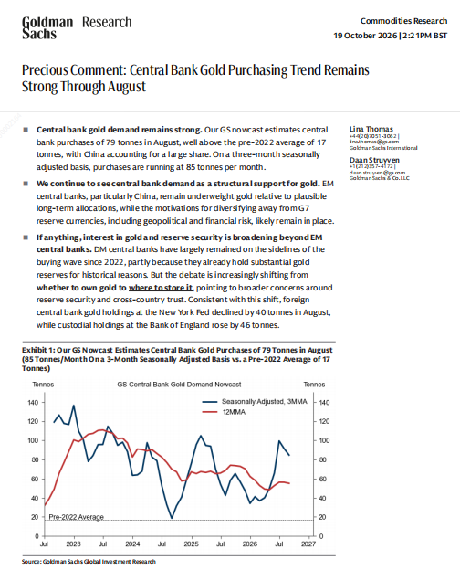
背景与关键数据
- Nowcast（实时估算）：官方统计（如 IMF）有滞后，高盛用海关、交易等数据建模“预估”当月央行购金量。
- 数字：8 月净购 79 吨（2022 年前每月平均 17 吨）；中国约占三分之一；三个月季调后速度 85 吨/月。
- 保管地变化：截图说明，8 月外国央行在纽约联储的黄金下降约 40 吨，而在英格兰银行的保管量上升约 46 吨。
- “发达国家央行”：美国、欧元区、日本等本来就有大量黄金储备，过去没有跟随新兴市场央行买金；现在话题转向“放在哪儿更安全、跨国信任如何”。2022 年俄罗斯外储被冻结之后，这种担忧被广泛讨论（背景知识）。
图片解读
截图是高盛 2026-10-19 发布的《Precious Comment》首页：
- 左侧三条要点：央行购金需求依然强劲；高盛认为这是金价的“结构性支撑”；对黄金与储备安全的兴趣正在从新兴市场扩散到发达国家。
- 下方 Exhibit 1 是折线图（单位：吨）：深蓝线是“季调后三个月移动平均”，红线是“12 个月移动平均”，虚线是“2022 年前平均 17 吨”。蓝线 2023 年有一波高点（约 110 吨），2024 年中降至接近 20 吨，随后震荡回升到 2026 年中的约 100 吨附近，近期仍在 85 吨左右；红线（长期平滑）在约 55 吨上下。读法：购金已经比 2022 年前高出几倍，并且至今没有退回旧水平。
为什么重要 / 对市场和经济的含义
央行是“不看价格”的大买家：它们买金不是为了赚钱，而是为了分散外汇储备、降低对美元资产的依赖。所以只要这种需求结构不变，金价就有一个“底部买盘”。结合帖 4（美银认为金价还要“用时间换空间”）：短期技术面可能继续调整，但中长期有央行需求托底——这两个观点并不矛盾。
延伸知识
- 储备货币多元化：外汇储备像一个国家的“应急钱包”，里面放美元债、欧元债、黄金等。黄金不是任何一国的负债，不会违约、不会被冻结，这是它在地缘紧张时被偏爱的原因。
- 黄金存放（custody）：金条要放在金库里，放在哪个国家的央行金库，就受那个国家的法律和政治风险影响。所以“存哪里”本质是“信任谁”。
帖 6 · 2026-10-21 13:45（美西）· JPM：中国股市的“创新—回报”缺口
摩根大通回答的是一个根本问题：中国产业很强，为什么股市赚不到相应的钱？ 答案是“产业竞争力 ≠ 股东回报”，要看需求、定价权和市场准入三个缺口能否收窄。读全文收起
帖子原文
JPM： 中国贡献了全球约 30% 的制造业增加值，占全球商品出口约 15%，同时在电动汽车、电池、光伏、造船、工业机器人、人工智能和生物科技等领域具有较强竞争力。但股票市场的表现并没有与产业发展同步。这说明一个问题：一个国家的产业竞争力，与投资者能够获得的股票回报，是两个不同的概念。产业竞争力可以体现在产量、技术、出口份额和生产效率上。但股东回报最终取决于企业利润、资本回报率、估值和股东分配。 第一个问题：出口引擎足以支撑中国企业盈利吗？海外收入占比虽然已经从 2024 年的 15% 提高到 18%，但国内市场仍然占据绝大部分收入。这意味着国内需求才是中国股票市场整体盈利的主要约束。另外，目前的出口结构偏向“少就业”（升级）。 第二个问题：中国什么时候会出现下一次“924 行情”式政策转向？2026 年与 2024 年 9 月的宏观条件已经不同。出口分散了部分压力。如果出口增速从当前两位数降至 5% 左右的中个位数，并开始冲击就业，政府采取更大规模刺激的概率就可能上升。 第三个问题：中国 AI 发展能否让互联网股票重新获得估值溢价？我们认为，中国 AI 产业现在最大的问题不是技术无法发展，而是技术价值主要集中在硬件端，软件与应用层还没有形成足够清晰的盈利模式。 第四个问题：反内卷究竟让哪些行业恢复了定价权？物流、化工和锂产业已经在供给、价格和利润三个环节看到不同程度的改善。但执行仍然不易。因为很多产能过剩行业由民营企业主导，而地方政府又有维持投资、就业和税收的需求。 第五个问题：中国制造业升级，为什么还没有充分转化为股票收益？技术升级本身并不自动保证投资回报，企业利润改善和股价上涨之间，仍然受到汇率、关税、贸易壁垒和估值等因素影响。 第六个问题：房地产、消费和传统经济板块还有没有机会？我们更倾向于认为，房地产稳定需要较长时间，传统经济板块的持续复苏仍然取决于房价、居民收入和消费信心的改善。 第七个问题：中国居民的银行存款能否成为股市上涨的新动力？这种变化不是直线发展的，而是高度依赖市场表现和居民信心。如果中国家庭将总财富中额外 1 个百分点配置到股票市场，理论上可能带来约 5.3 万亿元人民币的资金流入。资金是否流入，还取决于股票回报预期、风险偏好、收入稳定性以及家庭流动性需求。资本市场改革能够改善投资渠道，却不一定能够独立解决居民风险偏好不足的问题。 #经济数据#
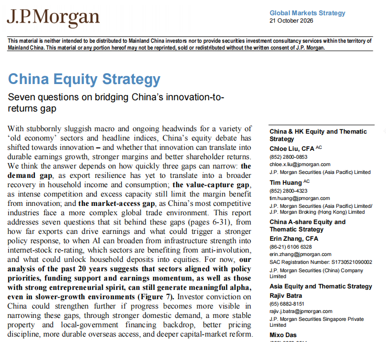
附件：PDF《China Equity Strategy: Seven questions on bridging China's innovation-to-returns gap》（约 1.34 MB，未下载，依据帖文与首页截图）。
背景与关键数据
- 截图首页（日期 2026-10-21，JPM Global Markets Strategy）说明：宏观依旧偏弱、“老经济”板块与大盘指数面临阻力，所以股市讨论转向“创新能否转化为持续盈利、更高利润率与更好的股东回报”。关键在三个缺口：
- 需求缺口（demand gap）：出口韧性还没传导到居民收入与消费的全面复苏；
- 价值捕获缺口（value-capture gap）：竞争激烈、产能过剩限制了创新带来的利润率改善；
- 市场准入缺口（market-access gap）：最有竞争力的行业面对更复杂的全球贸易环境。
- 首页还提到：过去 20 年的分析显示，与政策方向一致、有资金支持和盈利动能、具有企业家精神的板块，即使在低增长环境里也能产生超额收益（Alpha）。
- 七个问题里的关键数字：海外收入占比 15% → 18%；出口增速若从两位数降到 5% 左右且冲击就业，大规模刺激概率会上升；家庭多配 1 个百分点财富到股票，约带来 5.3 万亿元资金（反推家庭总财富约 530 万亿元，推算）。
- 名词：**“924 行情”指 2024 年 9 月 24 日前后一揽子政策（降息、降准、股市支持工具）触发的 A 股急涨；“反内卷”指整治恶性低价竞争、推动行业自律与产能出清；“定价权”**指企业能不能把成本涨幅转嫁给下游。
图片解读
截图是报告第一页（标题 China Equity Strategy: Seven questions on bridging China's innovation-to-returns gap），要点已在上面整理；右侧列的是 JPM 中国股票策略团队的联系人。
为什么重要 / 对市场和经济的含义
这份报告和后面帖 11（国盛）形成呼应：技术升级本身并不自动带来投资回报，关键看有没有扩散到整个经济、有没有改善利润和居民收入。对股市而言，若出口放缓冲击就业，政策刺激概率上升，这被称为“政策看跌期权”（policy put）。同时也解释了帖 10：在股市回报不确定、居民风险偏好不足时，资金更愿意去买债。
延伸知识
- 产业竞争力 vs 股东回报：比如 2000 年前后，美国光纤网络建设拉动了互联网，但很多光纤公司破产、股东血本无归——“技术赢了，投资者输了”。公司赚多少钱、分给股东多少、估值多高，才是回报的决定因素。
- 居民存款搬家：中国居民存款规模巨大，一旦存款利率持续下降，会有一部分转向股票/基金。但“搬不搬”取决于信心，不是靠政策喊口号能强推的。
帖 7 · 2026-10-21 14:00（美西）· 野村：中国央行转向隔夜利率，流动性更宽更久
央行行长潘功胜宣布，公开市场操作的主要期限将由 7 天逐步转为隔夜，隔夜利率成为主要政策利率；野村据此判断资金会“更松更久”，并加仓做多 5 年期国债。读全文收起
帖子原文
野村： 中国央行正在将货币政策的核心操作利率，从 7 天期逐步转向隔夜利率。这意味着，央行可能通过长期维持低廉、稳定的短期资金成本，支持金融体系和债券市场，而不必每次都依靠大幅降低传统贷款基准利率。我们预计，资金成本将维持低位，5 年期中国国债收益率可能在 11 月底降至 1.25%。 #金融#
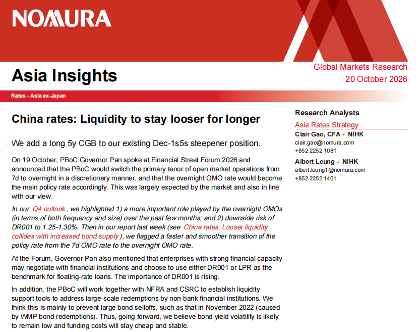
背景与关键数据
截图是野村《Asia Insights》（2026-10-20）首页，标题“China rates: Liquidity to stay looser for longer”。要点：
- 10 月 19 日，潘功胜在金融街论坛 2026 上宣布：央行将以“酌情”（discretionary）方式把公开市场操作（OMO）的主要期限从 7 天 → 隔夜，隔夜 OMO 利率成为主要政策利率。这在市场预期之内。
- 野村此前判断：隔夜操作的重要性上升；DR001（银行间隔夜质押式回购利率，可理解成“银行之间借一天钱的价格”）下行空间到 1.25%–1.30%。
- 潘还提到：企业可与金融机构协商，用 DR001 或 LPR 作为浮动利率贷款的基准——DR001 的地位上升。
- 央行将与金融监管总局（NFRA）、证监会（CSRC）一起建立“流动性支持工具”，应对非银机构的大额赎回，目的是避免像 2022 年 11 月（理财产品赎回引发债市抛售）那样的大幅下跌。
- 野村结论：债券收益率波动可能保持低位，资金成本便宜且稳定；在已有的“12 月 1s5s 做陡”头寸上，加做多 5 年期国债。
名词：
- OMO（公开市场操作）：央行通过逆回购等方式向银行放短期资金，是调节流动性的日常工具。
- LPR：贷款市场报价利率，是银行贷款定价的基准。
- 做陡曲线（steepener）：押注短端利率下降更多（或长端上升更多），使 1 年与 5 年之间的利差变大。
图片解读
截图正是上述报告首页：红色 Nomura 头部；左侧正文包含三段（19 日讲话、Q4 展望中对隔夜 OMO 与 DR001 的判断、DR001 的基准作用）；右侧为分析师联系人。
为什么重要 / 对市场和经济的含义
把政策利率锚从 7 天换成隔夜，相当于把“央行的价格信号”压到最短端、让货币市场利率更稳、更可预期。对债市来说是“央行兜底”的强信号；对银行和实体来说，企业可选 DR001 做浮息基准，意味着贷款利率有望跟着“便宜的短期资金”下行，而不用每次都等 LPR 下调。结合帖 10：债券热，是这个“低利率长周期”最直接的体现。
延伸知识
- 利率走廊（Interest Rate Corridor）：央行设定一个上限（借给银行的利率）和下限（存款利率），让隔夜市场利率在走廊中运行。美联储（有效联邦基金利率）、欧央行（€STR）都以隔夜利率为政策锚，这是国际惯例，中国正在向它靠拢。
- 为什么要防“赎回潮”：债券基金/理财遇到集中赎回，被迫卖债，债价下跌又引发更多赎回，形成“踩踏”。2022 年 11 月就出现过这种螺旋，所以监管希望有工具提前兜底。
帖 8 · 2026-10-21 14:06（美西）· 高盛：9 月中国外汇净流入 500 亿美元
9 月中国外汇资金仍是净流入（约 500 亿美元），靠的是贸易顺差，而证券投资项下却有净流出——“赚的外汇多了，但资金出海买资产也多了”。读全文收起
帖子原文
高盛： 9 月份中国外汇净流入 500 亿美元，略低于 8 月的 550 亿美元。具体而言：境内即期外汇交易带来 540 亿美元净流入。新签订及撤销的远期外汇交易带来 170 亿美元净流入。国家外汇管理局公布的跨境人民币资金流动数据显示，当月净流出 210 亿美元。 9 月经常账户相关外汇资金净流入 740 亿美元，高于 8 月的 620 亿美元。与此同时，货物贸易结汇比例上升。证券投资相关跨境净收付款 9 月净流出 310 亿美元，8 月净流出 270 亿美元。但其背后究竟是中国投资者增加海外配置，还是境外投资者减少中国配置，仍需进一步拆分。 #金融#
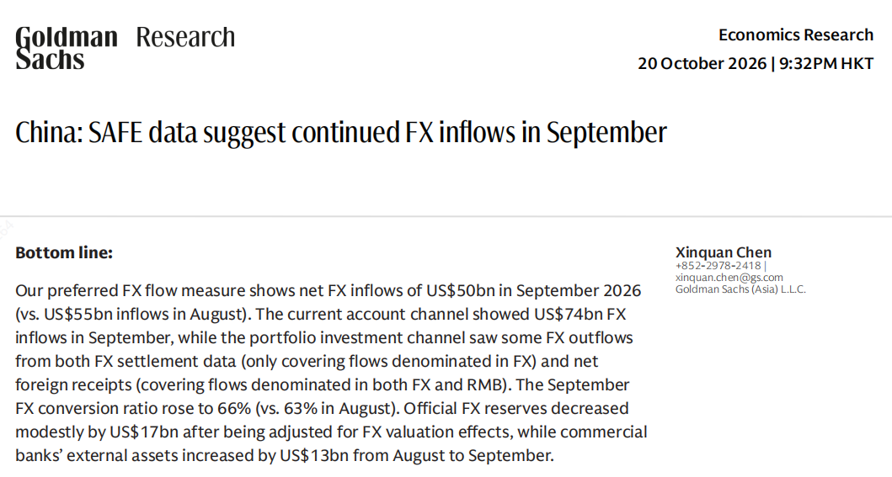
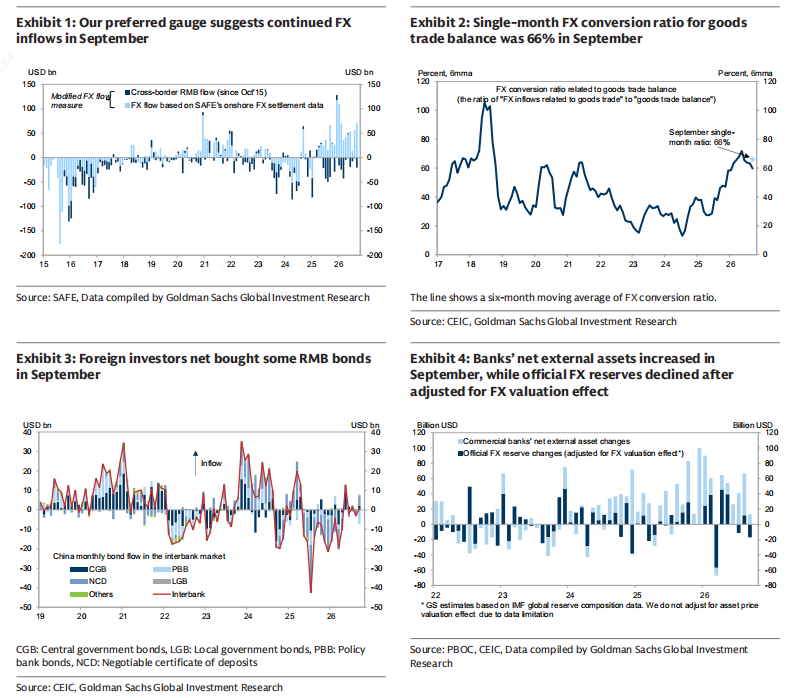
背景与关键数据
- 拆解：500 亿美元 = 境内即期 +540 亿 + 远期 +170 亿 − 跨境人民币 −210 亿（540 + 170 − 210 = 500，对得上）。
- **经常账户（贸易、收入等）**净流入 740 亿美元（8 月 620 亿）。
- 证券投资项目净流出 310 亿美元（8 月 270 亿），即跨境买卖股票债券的净出海资金。高盛提醒：这到底是中国投资者买海外资产增多，还是外国人减持中国资产，还要拆分才知道。
- 结汇率（FX conversion ratio）：出口企业把收到的美元换成人民币的比例，9 月 66%（8 月 63%）。
- 官方外汇储备（剔除估值变动）减少 170 亿美元，同时商业银行对外资产增加 130 亿美元——说明一部分外汇留在银行和企业手里，而不是进入央行外储。
图片解读
- 图 1：高盛 2026-10-20 报告首页《China: SAFE data suggest continued FX inflows in September》，“Bottom line”即上面这些数字。
- 图 2（四个 Exhibit，数据来源 SAFE/CEIC/高盛）：
- Exhibit 1：高盛偏好的外汇流量指标（柱状，两色分别为“跨境人民币流量”和“基于外汇局境内结售汇的流量”），2015–16 年有巨额净流出，近两年转为净流入；
- Exhibit 2：货物贸易结汇率（六个月移动平均线），2018 年前后高于 100%，2023–24 年降到约 15% 的低位，近期回到约 60%–70%，9 月单月 66%；
- Exhibit 3：外国投资者银行间债券月度净买入（国债 CGB、政策性银行债 PBB、同业存单 NCD 等），9 月小幅净买入；
- Exhibit 4：商业银行净对外资产变动（浅蓝）与官方外储变动（深蓝，已剔除估值），9 月银行增加、官方外储减少。
为什么重要 / 对市场和经济的含义
外汇净流入意味着人民币汇率有支撑；“结汇率回升”意味着出口企业更愿意把美元换成人民币，这对汇率是正面。证券项目净流出则是潜在的“出海”压力。叠加帖 10 的“国债热”和帖 7 的“流动性宽松”，外资小幅净买入 RMB 债是个有意思的细节——说明低利率环境下人民币债仍有一定配置吸引力。
延伸知识
- 国际收支“跷跷板”：经常账户顺差（贸易赚外汇）理论上要和资本/金融账户逆差（资金出海）加起来平衡。顺差大、同时资金出海多，意味着“赚来的外汇被存到银行或买海外资产”，而不是全部换回人民币。
- “藏汇于民”：外汇不放在央行，而是放在企业和居民账户里；这是官方外储减少、银行外币资产增加同时出现的原因之一。
帖 9 · 2026-10-21 14:13（美西）· 人大财税研究所：晚清财政的“权—责—财”逻辑
晚清的财政困境不只是“钱不够”，而是财权（谁掌握钱）与事权（谁承担责任）被错配——中央要承担赔款、国防，地方却靠厘金等临时税源掌握了钱，所以财政“制度性失灵”。读全文收起
帖子原文
人大财税研究所： **财政困境并非自然灾难，而是制度性产物。**晚清财政问题若仅以“危机”来解释，显然不足，因其仅揭示了现象，未能揭示现象背后的制度逻辑。事实上，财政从来都不是孤立的账簿，而是国家在承担公共责任的同时，如何动员资源的制度化表达。换言之，财政问题不仅是收入与支出的差额，更是权力与责任的配置问题。 #TAX# （聊地方财政不该只看到地方财政）
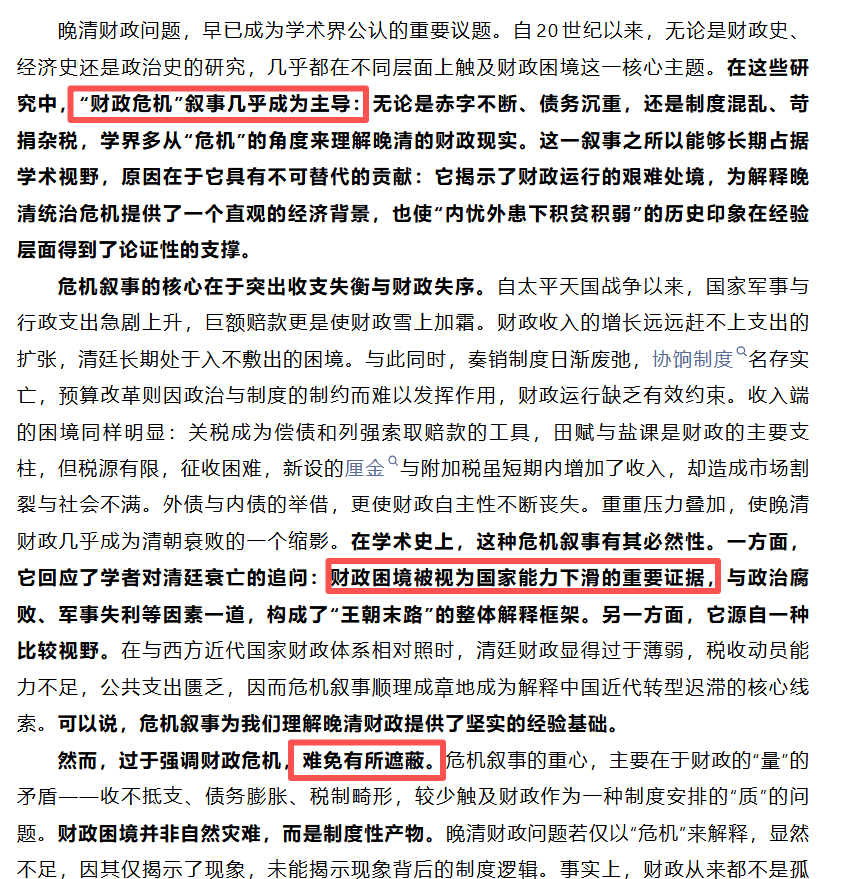
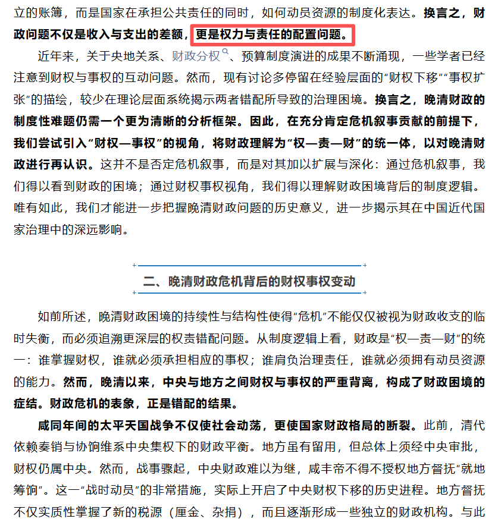
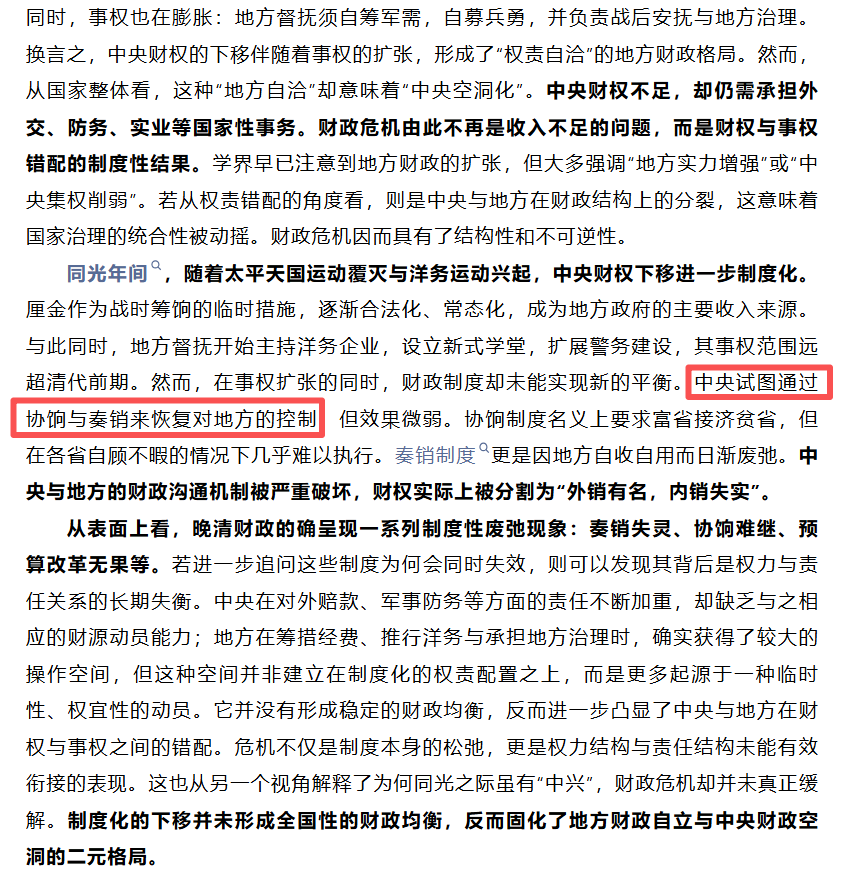
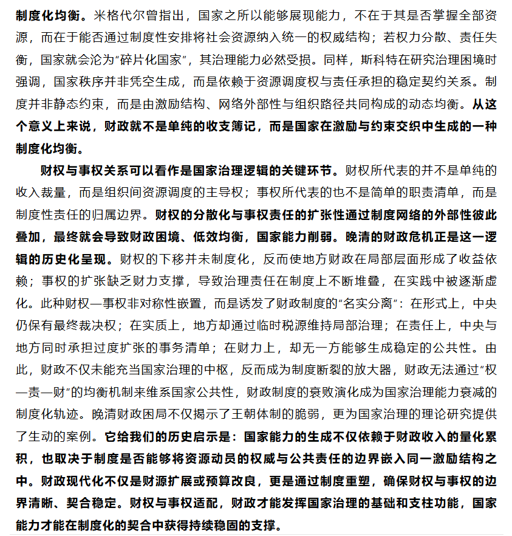
背景与关键数据（四张图是论文节选，我把逻辑串起来）
- “危机叙事”：过去学界解释晚清财政，主要强调“收支失衡”：太平天国之后军费和行政支出暴涨、巨额赔款，加上关税用来还债，田赋和盐课有限，新设的厘金（商品过境税）虽然增加收入，却造成市场割裂和社会不满。这个叙事重要，但“难免有所遮蔽”：它只讲“量”（收不抵支），没讲“质”（制度怎么运行）。
- 新视角：“财权—事权”，把财政看成“权—责—财”的统一体：谁掌握财权，谁就应承担相应事权；谁肩负治理责任，谁就必须拥有动员资源的能力。
- 历史演变：
- 咸丰年间：太平天国战争迫使皇帝授权地方督抚“就地筹饷”，等于开启财权下移；
- 同光年间：厘金从临时措施变成合法、常态化的地方主要收入；地方督抚办洋务企业、新式学堂、警务，事权远超清代前期；
- 中央试图用协饷（富省接济穷省）和奏销（地方向中央汇报账目）恢复控制，但效果很弱；中央与地方的财政沟通被破坏，财权实际上变成“外销有名，内销失实”——账面上上缴，实际上地方自收自用。
- 理论结论：引用米格代尔、斯科特等人观点——国家能力来自能否通过制度把资源与责任纳入同一套激励结构；财权与事权错配会让国家变成“碎片化国家”；财政现代化不只是扩大财源或改良预算，而是通过制度重塑让财权与事权的边界清晰、契合稳定。
Jason 的括号补充“聊地方财政不该只看到地方财政”，大意是：谈地方财政，应放进央地关系、权责分配这个更大的制度框架里，而不是只盯着地方的账（这是对 Jason 意图的推测）。
图片解读
四张图都是论文文本截图（红框是重点句）：图 1 讲“危机叙事”的贡献与局限，红框有“财政危机叙事几乎成为主导”“财政困境被视为国家能力下滑的重要证据”“难免有所遮蔽”；图 2 引出“财权—事权”视角，红框是“更是权力与责任的配置问题”；图 3 讲咸丰、同治光绪年间财权下移与“外销有名，内销失实”，红框是“中央试图通过协饷与奏销来恢复对地方的控制”；图 4 是理论总结，把财政称为“国家在激励与约束交织中生成的制度化均衡”。
为什么重要 / 对市场和经济的含义
这篇文章表面谈晚清，实际是在为今天的央地财政关系提供一个思考框架：中央与地方的“钱”和“事”是否匹配。今天的类似问题包括：地方承担大量民生与基建支出，但收入又依赖土地出让（与房价密切相关，见帖 1、2），当房价下行、土地收入收缩，地方财政就紧张，进而影响投资、公共服务和就业。把今天与帖 12（雍正“过紧日子”）合着看，Jason 在做一次“财政史”的类比阅读。
延伸知识
- 财政联邦主义（Fiscal Federalism）：一个核心原则是“钱随事走”——谁办事，谁就应有稳定的税源或转移支付。如果事权下放但财权上收，地方就会靠预算外收入、举债、土地出让来“补洞”，这是中外都出现过的问题。
- 厘金：1853 年前后为筹军饷而开征的商品过境税，每过一个关卡抽一次，层层加码，导致国内市场被切碎——一个“临时措施变成永久制度”的经典例子。
帖 10 · 2026-10-21 14:20（美西）· 一财：国内资金扫货债基，10 年期国债收益率下行
股市在 3700 点附近来回拉锯、基金净值回撤的同时，债券基金净值屡创新高、债券 ETF 吸金，10 年期国债收益率降到约 1.63%。读全文收起
帖子原文
一财： 国内资金扫货债基，10 年中债收益率不断下行 #金融#
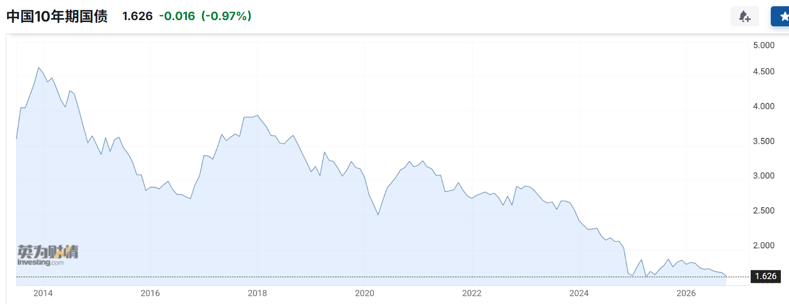
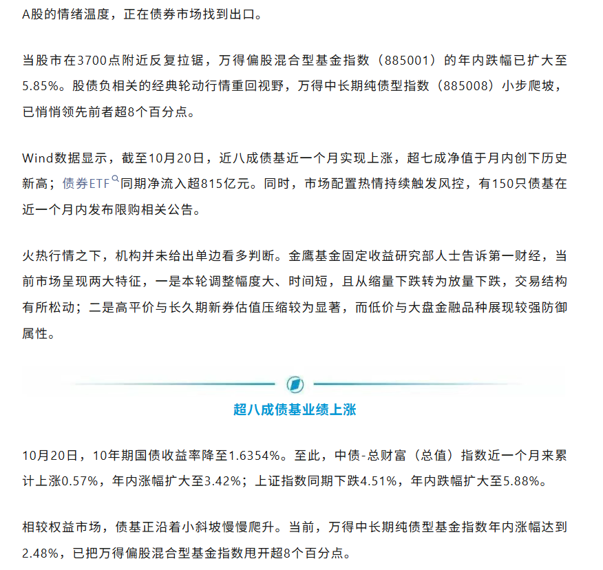
背景与关键数据
文章（第一财经，数据截至 10 月 20 日，来自 Wind）要点：
- “A 股的情绪温度，正在债券市场找到出口”：上证指数在 3700 点附近反复拉锯；万得偏股混合型基金指数（885001）年内跌幅扩大到 5.85%；万得中长期纯债型基金指数（885008）年内涨 2.48%，已领先前者超过 8 个百分点。
- 近八成债基近一个月上涨，超七成债基净值在一个月内创历史新高；债券 ETF 同期净流入超过 815 亿元；有 150 只债基在近一个月内发布了限购公告（基金公司担心资金涌入过快、影响持有人收益，所以限制申购）。
- 10 月 20 日，10 年期国债收益率降至 1.6354%；中债-总财富（总值）指数近一个月累计上涨 0.57%，年内涨 3.42%；上证指数同期下跌 4.51%，年内累计下跌 5.88%。
- 金鹰基金人士点评：一是本轮债市调整“幅度大、时间短，从缩量下跌转为放量下跌”，交易结构有所松动；二是高平价与长久期新券估值压缩较明显，而低价券和大盘金融品种表现出较强防御属性。
图片解读
- 图 1（Investing.com 的中国 10 年期国债收益率月线，2013–2026）：纵轴是收益率（%）。2014 年约 4.6% 的高点，2016 年约 2.7%，2018 年约 3.9%，2020 年疫情前后在 2.5%–3.3% 之间，2021 年约 3.2%，2022–2023 年在 2.6%–2.9% 附近，2024 年起明显下台阶、跌破 2%，2025 年起在 1.6%–1.8% 区间徘徊；最新 1.626%（当日 −0.016），是图中的最低区域。读法：长期趋势就是“利率不断往下走”。
- 图 2：一财文章正文截图，数字已在上面整理。
为什么重要 / 对市场和经济的含义
债券收益率走低，等于说市场认为经济增长和通胀偏弱，并且资金宁可要“安全的低收益”。这是帖 1（“三不”）、帖 6（居民风险偏好不足）、帖 7（央行维持低利率）合在一起的结果：居民把钱从房子（帖 2）、股票挪向债券，债券价格上涨，收益率下降。但也要看到风险：债基限购、放量下跌，说明拥挤交易和“踩踏”风险在累积（对应帖 7 里央行要设立流动性支持工具）。
延伸知识
- 债券价格与收益率反向：收益率下降 = 债券价格上升。持有久期越长的债券，价格对利率变动越敏感（利率下降 1%，久期 10 年的债券价格大约涨 10%）。
- “股债跷跷板”与“资产荒”：股市不好时，资金涌入债市；而当资金找不到足够收益的安全资产时，被称为“资产荒”，会把债券价格越推越高、收益率越压越低。
帖 11 · 2026-10-21 14:25（美西）· 国盛：新旧动能转换，关键是技术扩散
国盛证券比较美、日、韩的产业升级经验，得出结论：新兴产业能不能“拉动整体”，取决于新技术有没有扩散到传统行业和中小企业，从而抬高全要素生产率；日本卡在“扩散不足 + 泡沫破裂 + 老龄化”，韩国有“大企业强、中小企业弱”的二元结构。读全文收起
帖子原文
国盛： 新旧动能转换并非简单的新兴产业替代传统产业，关键在于新技术能否向更广泛的经济部门扩散，进而带动整体生产率提升。 #经济数据#
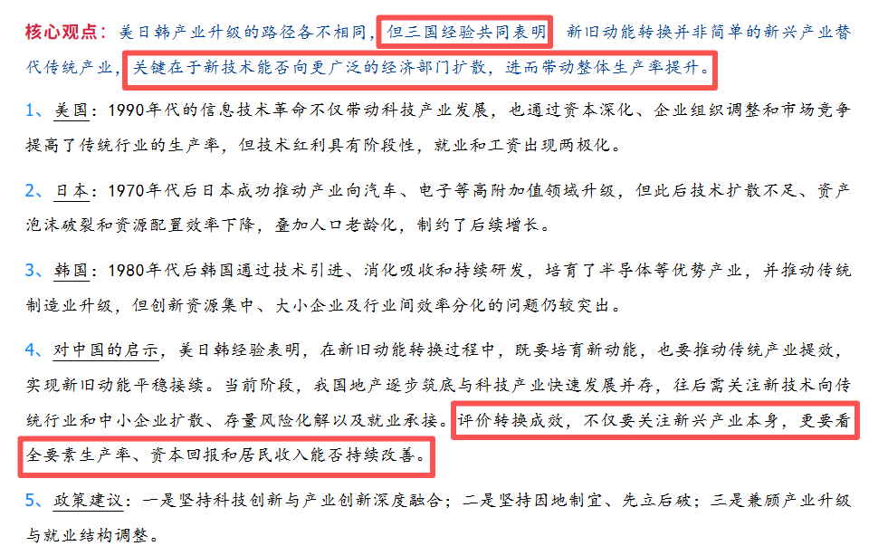
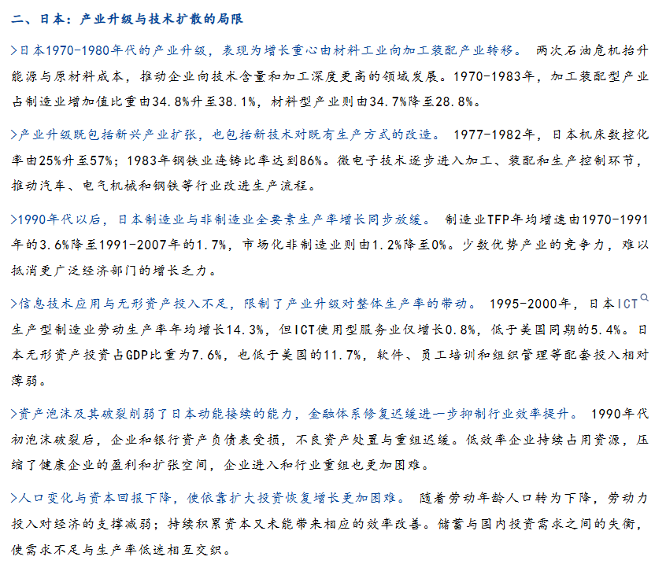
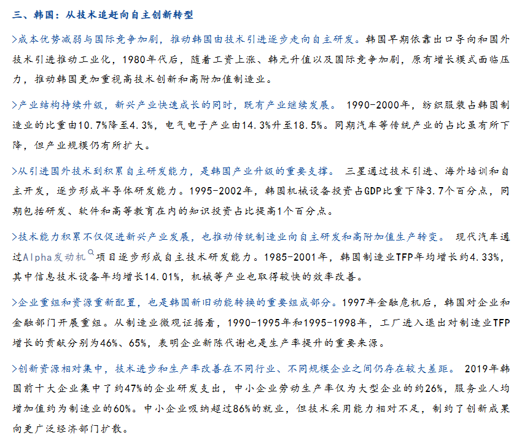
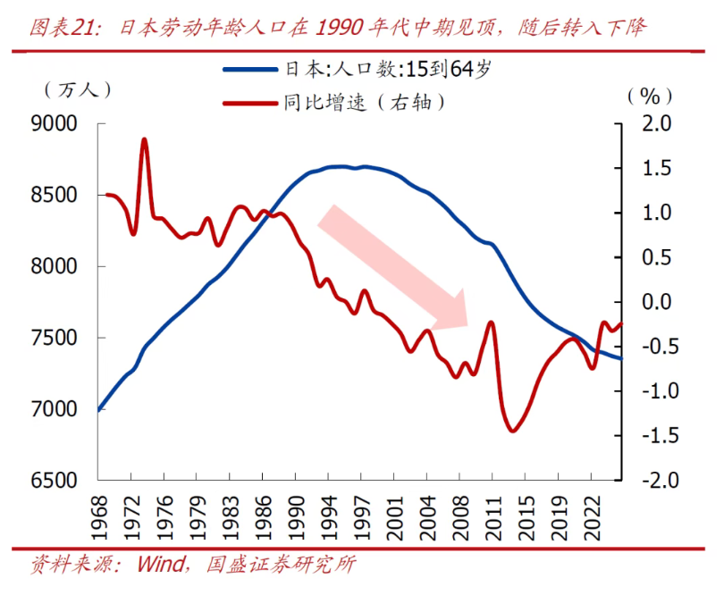
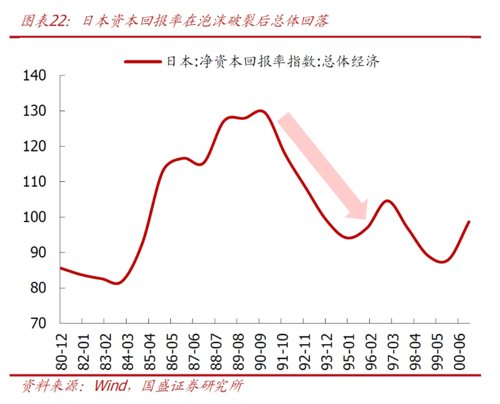
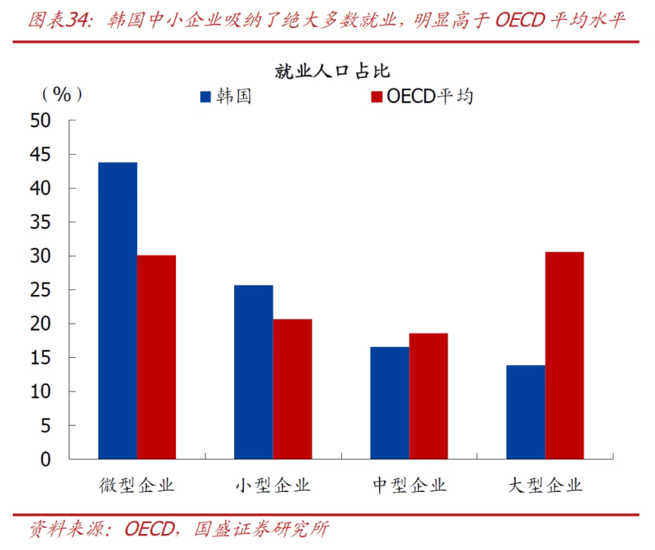
背景与关键数据
- 图 1（核心观点 + 四国要点）：
- 美国：1990 年代信息技术革命既带动科技产业，也通过资本深化、企业组织调整和市场竞争提高了传统行业生产率，但技术红利有阶段性，就业和工资出现两极化；
- 日本：1970 年代后成功升级到汽车、电子等高附加值领域，但之后技术扩散不足、资产泡沫破裂和资源配置效率下降，叠加人口老龄化，制约增长；
- 韩国：1980 年代后通过技术引进、消化吸收和持续研发培育半导体等优势产业，但创新资源集中、大小企业和行业间效率分化；
- 对中国：地产逐步筑底与科技产业快速发展并存，往后要关注新技术向传统行业和中小企业扩散、存量风险化解、就业承接；评价转换成效，不仅看新兴产业本身，更要看全要素生产率、资本回报和居民收入能否持续改善；政策建议：科技创新与产业创新深度融合、因地制宜先立后破、兼顾产业升级与就业结构调整。
- 图 2（日本）：1970–1983 年，加工装配型产业占制造业增加值比重由 34.8% 升到 38.1%，材料型由 34.7% 降到 28.8%；1990 年代后，制造业与非制造业全要素生产率（TFP）增长同步放缓——制造业 TFP 年均增速从 1970–1991 年的 3.6% 降到 1991–2007 年的 1.7%，市场化非制造业从 1.2% 降到 0%；1995–2000 年日本 ICT 生产型制造业劳动生产率年均增长 14.3%，但 ICT 使用型服务业只增 0.8%（美国同期 5.4%）；无形资产投资占 GDP 7.6%，低于美国的 11.7%。
- 图 3（韩国）：1990–2000 年纺织服装占制造业比重由 10.7% 降至 4.3%，电气电子由 14.3% 升至 18.5%；1985–2001 年制造业 TFP 年均增长约 4.33%；1990–1995、1995–1998 年企业的进入退出对制造业 TFP 增长的贡献分别为 46%、65%（说明“新陈代谢”重要）；2019 年前十大企业集中了约 47% 的研发支出，中小企业劳动生产率仅为大型企业的约 26%，服务业人均增加值约为制造业的 60%，中小企业吸纳超过 86% 的就业。
图片解读
- 图 4（图表 21）日本劳动年龄人口：蓝线是 15–64 岁人口（万人，左轴），1968 年约 7,000 万，上升到 1990 年代中期约 8,700 万见顶，随后下降到近年约 7,350 万；红线是同比增速（右轴），1990 年代起转为负值，2014 年前后降到约 −1.4% 的低点，近年约 −0.3%。读法：日本“劳动力峰值”在 1995 年前后，比泡沫破裂只晚几年。
- 图 5（图表 22）日本净资本回报率指数：红线从 1980 年的约 85 上升到 1990 年 9 月约 130 的高点，然后一路下滑到 1995 年初约 94，1997 年小幅反弹到约 104，1999 年中又回落到约 87。读法：泡沫破裂后，投资回报率大幅下降，企业“多投不多赚”。
- 图 6（图表 34）韩国各规模企业就业占比：蓝柱韩国、红柱 OECD 平均。微型企业：韩国约 44% vs OECD 约 30%；小型约 26% vs 21%；中型约 17% vs 19%；大型企业约 14% vs 31%。读法：韩国就业被大量小微企业吸收，而这些企业技术采用能力较弱，是技术扩散的“堵点”。
为什么重要 / 对市场和经济的含义
这是帖 6（JPM）的“学术版答案”：中国的芯片、电动车、AI 在 headlines 里很亮眼，但如果技术只停留在少数龙头，没有扩散到制造业整体和服务业、中小企业，那就没法转化为全社会的生产率提升、居民收入和企业利润。日本、韩国的历史给了两个警示：“龙头强、整体弱”（韩国）和“泡沫破裂后资本回报下降 + 老龄化”（日本）。这也是为什么 Jason 前面一直在铺垫人口、房价、财政问题。
延伸知识
- 全要素生产率（TFP，Solow 余量）：同样的劳动和资本，能多生产多少，多出来的那部分就是 TFP，通常代表技术和管理效率的进步。
- 技术扩散的“发电机悖论”：19 世纪末电力被发明后，美国工厂花了几十年才重新设计流程（从集中蒸汽动力改成每台机器独立电动），生产率才大幅提升。今天的 AI 可能也类似——发明得快，但“用起来”需要流程、人才和资本的配套。
帖 12 · 2026-10-21 15:08（美西）· 第 29 集，雍正拟旨过紧日子
Jason 用电视剧《雍正王朝》第 29 集的 9 个镜头，把“国库空虚 + 大战在即 → 皇帝带头砍开支、全部供应前线”这个财政决策场景展示出来，作为“过紧日子”的历史注脚（剧集名称依据帖子标题推测）。读全文收起
帖子原文
第 29 集，雍正拟旨过紧日子
（无标签；9 张都是电视剧画面截图。）
背景与关键数据
九张截图的字幕连起来是一段完整的旨意：
- “现在国库存银只有一千多万两”
- “也只能够大军一个月的开支”
- “当前的国策”
- “一切以西北军事为重”
- “所有的开支都要紧缩”
- “朕的开支和各官的开支”
- “在京各部衙门的开支也减去一半”
- “节省下来的钱，全部供应西北”
- “只要他们能够打胜这一仗”
其中既有身穿龙袍的雍正，也有一位老臣的画面。逻辑链条很清晰：①算账（国库有多少钱、能打多久）→ ②定优先级（军事第一）→ ③紧缩（从皇帝自己和京城各部衙门开始，砍一半）→ ④集中资源（节省的钱全部给前线）。
提醒：这是影视剧台词，不等同于严格史实。历史上，常见说法是康熙末年国库存银约 800 万两，雍正通过清查亏空、火耗归公（把地方官私自加收的“火耗”收归公库）、摊丁入亩（把人头税并入田赋）、养廉银等改革，到雍正末年国库存银增长到数千万两（约 6000 万两，常见引用数字）。
图片解读
9 张图都是电视画面加字幕，没有图表：前 2 张是“算账”（国库存银与大军开支），第 3–4 张是“定国策”，第 5–7 张是“紧缩开支”，第 8–9 张是“集中供应前线”。清晰度标注为 480P，说明来源是在线视频截图。
为什么重要 / 对市场和经济的含义
Jason 用这个场景大概在说：财政紧张时，决策者要先算清账，再排优先级，并让决策者自己带头“节流”。放到今天，“过紧日子”是近年中国政府预算和地方财政的常见表述，与帖 9（晚清财政的制度错配）、帖 2（房价下行影响土地财政）联在一起，可以读出对地方财政压力的关注（这是对 Jason 意图的推测，帖子没有明说）。
延伸知识
- 机会成本与预算约束：国库的钱是有限的，花在军事就不能花在其他地方。“过紧日子”本质上就是在预算约束下做优先级排序。
- “带头节流”的信号作用：政府要求下面紧缩时，先把自己的开支削减，是为了建立公信力。企业降本也一样，管理层先降薪、再要求员工降本，比反过来更有说服力。
帖 13 · 2026-10-21 15:12（美西）· 青年失业率“可控”增长
Jason 自制的两张图说明：今年的青年失业率比去年更差——16–24 岁在 9 月为约 18.0%，25–29 岁约 7.4%，标题里“可控”两字加了引号，有些反讽意味（对其含义的推测）。读全文收起
帖子原文
青年失业率“可控”增长 #自制图表#
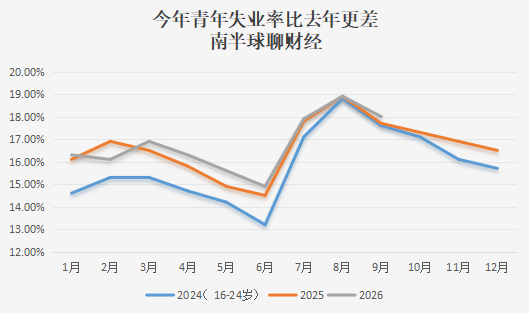
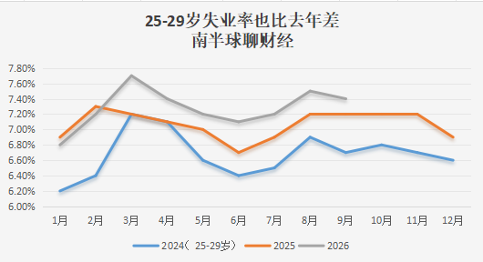
背景与关键数据
- 国家统计局公布的青年失业率有两个口径：16–24 岁（不含在校学生）和25–29 岁。每年 7–8 月是毕业季，青年失业率会冲高，随后回落。
- 帖 1 文中引用的数字也对得上：24 岁以下 18%、25–30 岁 7.4%。
图片解读
图 1：《今年青年失业率比去年更差》（16–24 岁，三条线 = 2024 蓝、2025 橙、2026 灰，横轴 1–12 月）
- 季节性很明显：6 月最低、7–8 月冲高到约 18%–19%，之后回落。
- 2026 年（灰线）读图近似值：1 月 16.3%、2 月 16.1%、3 月 16.9%、4 月 16.3%、5 月 15.6%、6 月 14.9%、7 月 17.9%、8 月 18.9%、9 月约 18.0%。
- 对比：9 月 2025 年约 17.7%、2024 年约 17.6%；2026 年 3–6 月明显高于前两年同月（比 2024 年高约 1–1.7 个百分点，比 2025 年高约 0.4–0.8 个百分点）；7–9 月毕业季的峰值与前两年接近（8 月约 18.9%，与 2025 年持平，9 月略高）。结论：春季到初夏的“淡季”水平更高，毕业季峰值没有明显更低。
图 2：《25–29 岁失业率也比去年差》（三条线含义同上）
- 2026 年（灰线）读图近似值：1 月 6.8%、2 月 7.2%、3 月约 7.7%（峰值）、4 月 7.4%、5 月 7.2%、6 月 7.1%、7 月 7.2%、8 月 7.5%、9 月约 7.4%。
- 对比：9 月 2025 年约 7.2%、2024 年约 6.7%；2026 年从 3 月起大部分月份都在三条线的最上面（1–2 月略低于 2025 年）。结论：25–29 岁失业率也在走高，而且不只是毕业季的短期波动，春夏两季都偏高。
（以上数字为我对图的读数，可能有 ±0.1–0.2 个百分点误差。）
为什么重要 / 对市场和经济的含义
青年失业是最敏感的“就业温度计”：年轻人收入预期低，推迟结婚、买房、生育，进而影响房地产和消费；这与帖 1（不要辞职）、帖 15（少子化）相连。从政策角度，JPM（帖 6）也提到“如果出口放缓并开始冲击就业，更大规模刺激的概率会上升”，所以就业数据是观察政策转向的重要指标。
延伸知识
- “失业率”的口径陷阱：统计局的 16–24 岁数据不含在校学生；如果更多人选择继续读书、考公考研、“躺平”，他们不在失业统计里，所以失业率可能低估压力，这就是为什么大家同时看“劳动参与率”。
- 摩擦性 vs 结构性失业：毕业季的短期上升是摩擦性（找工作需要时间）；如果岗位类型与毕业生技能长期不匹配，就是结构性失业，更难靠总量刺激解决。
帖 14 · 2026-10-21 15:20（美西）· 彭博：俄罗斯柴油输美、俄乌三边谈判重启
彭博的快讯汇总：俄罗斯已准备在原则上恢复美、俄、乌三边和平谈判，第一艘柴油船将发往美国，俄方还释放了一名被关押的美国人，油价应声下跌；中东原油流量也已接近战前水平——这些都是压低能源价格的因素。读全文收起
帖子原文
bloomberg： 俄罗斯柴油运往美国，俄乌停战有了新进展，俄罗斯应特朗普请求释放最后一名被拘留的美国人；中东石油流量接近战前水平 #其他国家经济#
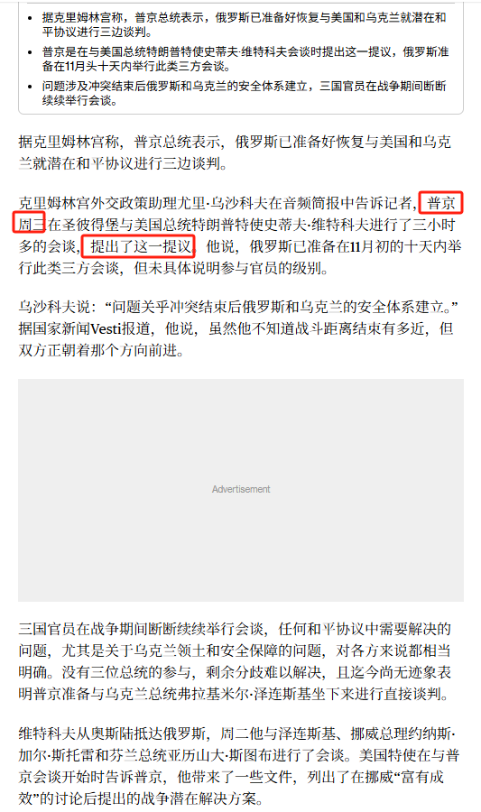
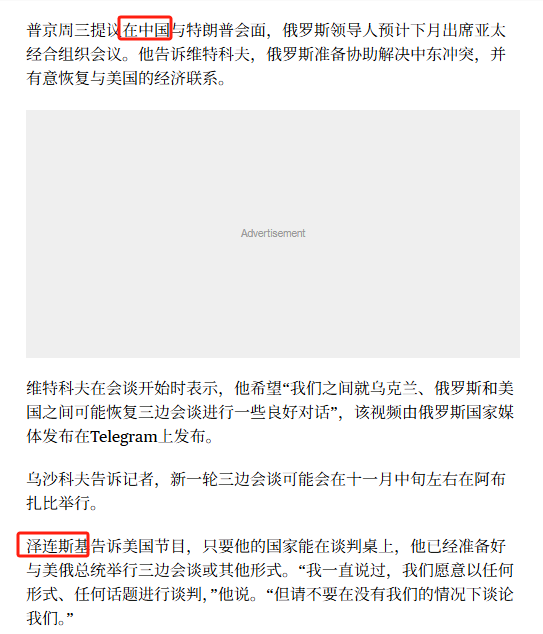
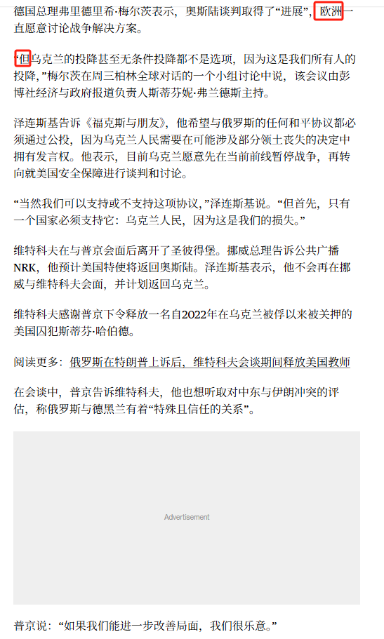
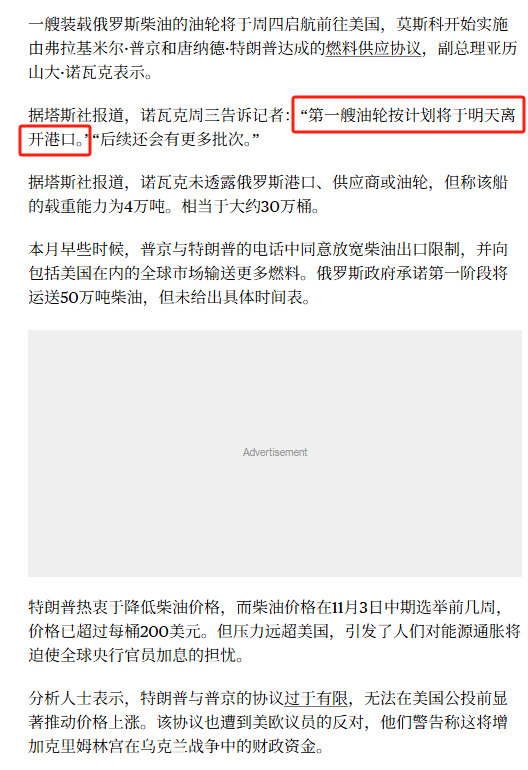
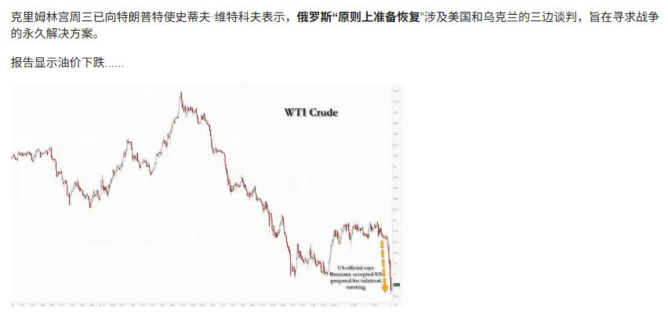
背景与关键数据（依据 5 张彭博文章截图，右侧为中文译文）
- 三边谈判：克里姆林宫称，普京周三在圣彼得堡与特朗普特使维特科夫会谈三小时以上，提出恢复美、俄、乌三边谈判；乌沙科夫称可能在 11 月初的十天内举行（另一段又写“十一月中旬左右在阿布扎比”——截图里两种说法并存，具体时间还不确定）。普京还提议与特朗普在中国会面，俄领导人预计下月出席亚太经合组织会议。
- 乌克兰与欧洲：泽连斯基说愿意以任何形式参加谈判，“但请不要在没有我们的情况下谈论我们”，和平协议须对乌克兰人民“公开”；德国总理默茨说“乌克兰投降不是选项”。
- 释放美国人：维特科夫感谢普京下令释放一名自 2022 年在乌克兰被俘后被关押的美国囚犯。（Jason 写“最后一名”，截图里只写“一名”。）
- 柴油：第一艘装载俄罗斯柴油的油轮将于周四启航前往美国（俄副总理诺瓦克称“明天离开港口”），载重约 4 万吨（约 30 万桶）；本月早些时候，普京在与特朗普通话时同意放宽柴油出口限制，并承诺第一阶段运送 50 万吨。特朗普热衷于降低柴油价格，而柴油价格在 11 月 3 日期中选举前几周已超过每桶 200 美元。压力不止在美国，还引发了“能源通胀将迫使全球央行加息”的担忧。分析人士认为，这一协议“过于有限”，难以在美国大选前显著影响价格（截图译文写成“推动价格上涨”，按上下文，原意应是“难以显著影响价格”，这是我的推测）；协议还遭到美欧议员反对，他们警告会增加克里姆林宫在乌克兰战争中的财政资金。
图片解读
- 图 1–4：文章文字截图（红框是重点：普京周三提出、在中国与特朗普会面、泽连斯基表态、欧洲立场、“第一艘油轮将于明天离开港口”）。
- 图 5：一张 WTI 原油价格走势图，横轴为时间，价格先升后大幅回落，右端有一条橙色虚线箭头向下，标注为“US official says Russians accepted US proposal for trilateral meeting”（美国官员称俄方接受了美方的三边会谈提议）。配的文字是“报告显示油价下跌……”。读法：和平谈判消息公布后，油价快速下跌，说明市场把“俄乌缓和”当作供给风险下降的信号。
为什么重要 / 对市场和经济的含义
油价是通胀与利率的关键输入：柴油价格高企 → 运输和制造成本上升 → 通胀 → 央行被迫加息（帖 3 的新西兰就在加息）。所以俄罗斯放油、中东流量恢复这两个消息，对于市场来说是“降通胀、降利率压力”的利好。与帖 4 对照：美银（技术面）认为油价上方还有空间，而这条新闻是“基本面利空”——技术派与消息面的博弈。同时，美国中期选举（11 月 3 日）使美国政府有强烈的“压低油价”政治动机；注意帖里的数字和日期都来自彭博截图，具体落地仍有不确定性。
延伸知识
- 能源与通胀的传导：能源是“成本的成本”——运输、化肥、化工都依赖它。所以央行非常关注“能源驱动的通胀”，但它又很难用加息来“造出更多油”，这就是所谓“供给冲击”的难题。
- 制裁与对冲：俄罗斯柴油出口限制和被制裁的原油，使全球柴油价差（crack spread，原油到柴油的加工利润）变大；放宽出口会缩小这个价差。
帖 15 · 2026-10-21 15:36（美西）· 穆迪：生育率下降与老龄化的经济影响
穆迪的结论：低生育率的影响是“慢变量但不可逆”——它会先在劳动力、财政、医疗上累积压力，而 AI、自动化只能缓解“供给”，救不了“需求”；未来经济靠的是生产率，而不是人口。读全文收起
帖子原文
穆迪： 生育率为 1.0 意味着，下一代人口规模约为上一代的一半。生育率为 0.8 时，经积累人口下降速度会加快，这些影响往往需要数十年时间才会逐步显现，但由于更小规模的人口群体最终会成为下一代父母，因此这一趋势一旦形成，便难以逆转。生育率下降最终会重塑年龄结构及人口增长情况。当前生育率降幅最大的国家，也将在未来几十年经历最快速的人口老龄化进程。随着社会老龄化加深，能够供养不断增加的退休人口的劳动者越来越少，这将在总人口正式开始萎缩之前，就对劳动力市场、公共财政和医疗体系带来日益沉重的压力。日本人口的“倒金字塔”结构最为显著，65 岁及以上人口占总人口的近 30%，而 15 岁以下人口仅占 11% 左右。韩国紧随其后。而随着独生子女政策实施前出生的庞大人口群组陆续步入退休阶段，中国也正迅速朝着相同的方向发展。 随着社会老龄化加深和抚养比上升，调整养老金制度、医疗服务体系以及财政框架将变得至关重要。及早采取行动的国家，可能更有能力应对人口结构变化带来的压力。 这些措施都无法改变人口结构变化这一基本的人口学规律。虽然自动化，AI 和人力资本投资可缓解劳动力短缺并支持供给，但对应对老龄化和人口增长放缓的需求侧影响效果甚微。随着时间的推移，即便生产能力有所提升，消费者、家庭和劳动者增长的减弱也可能对总需求构成拖累。不过，这些措施将决定哪些经济体、行业和发行人能够最成功地适应这样的一个世界：推动经济扩张的主要动力将不再是人口增长，而是生产率的提升。 #人口#
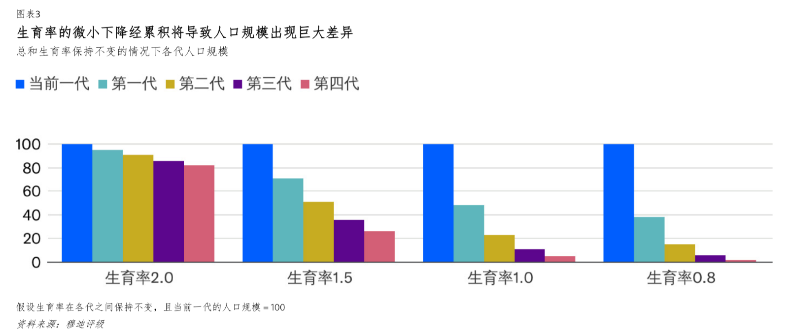
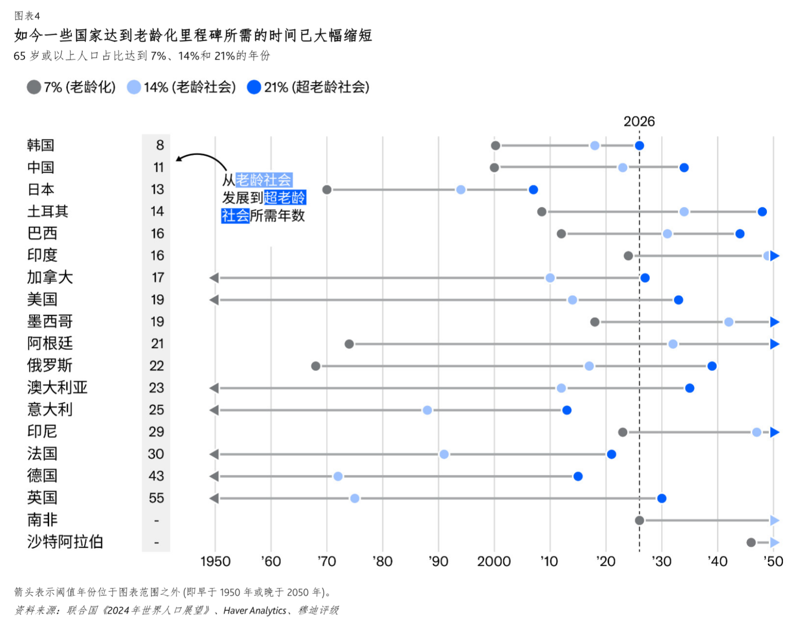
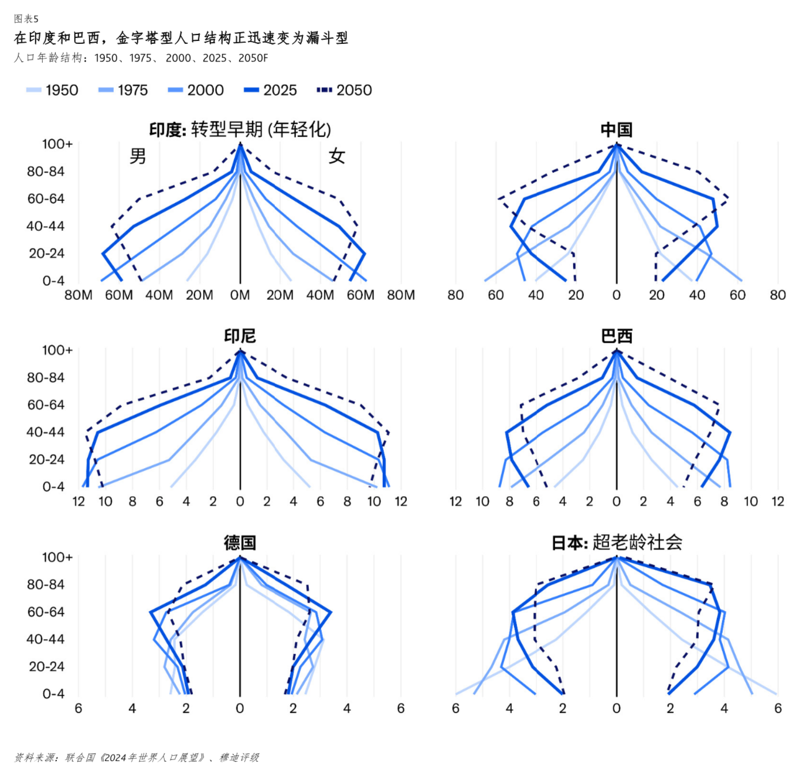
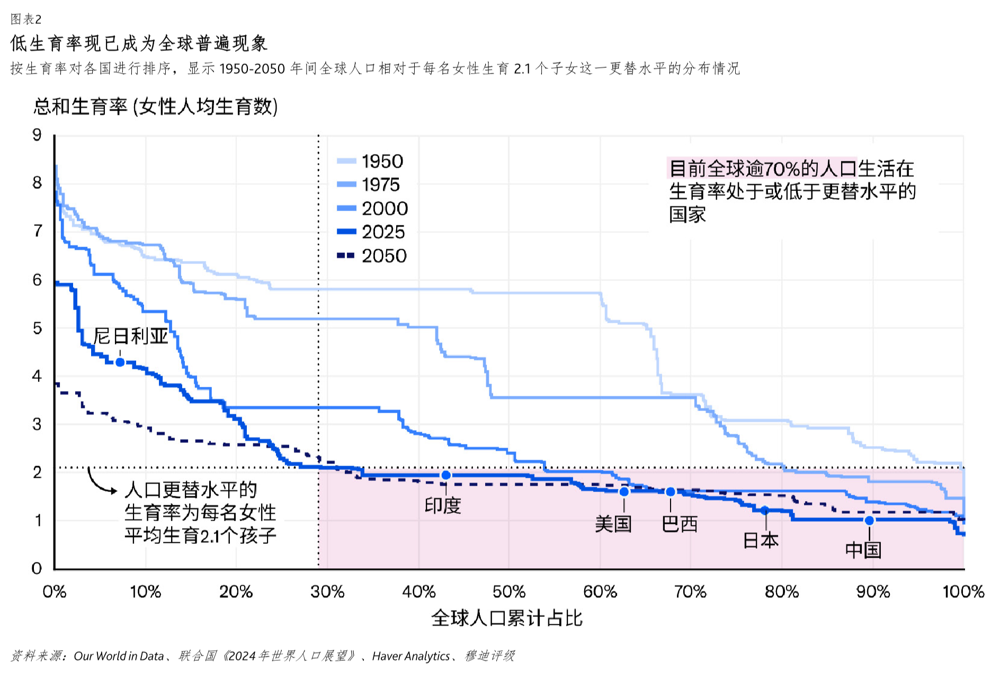
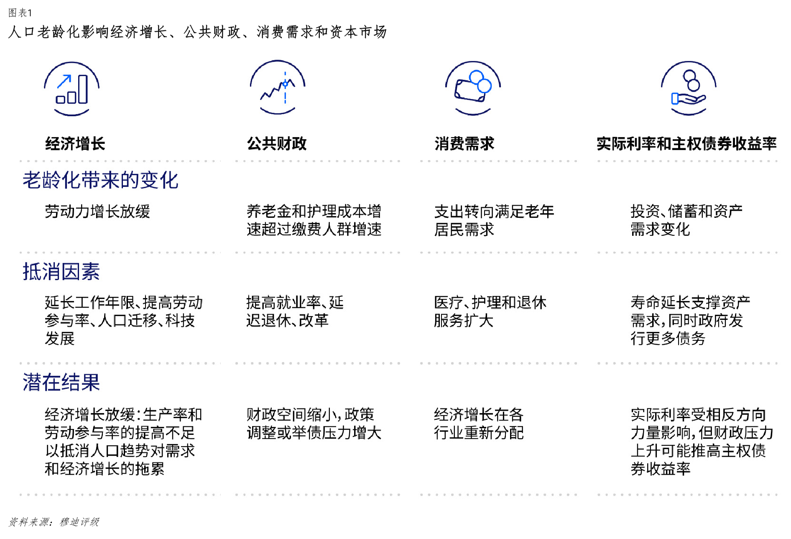
背景与关键数据
- 总和生育率（TFR）：平均每位女性一生生育的孩子数；维持人口不变的“更替水平”约 2.1。
- 文中的算术：TFR = 1.0 → 下一代约为上一代的一半；TFR = 0.8 → 缩得更快；“更小的群体将成为下一代的父母”，所以出现人口动能（momentum），一旦形成难以逆转。
- 老龄化阶段：65 岁以上人口占比达 7% 称“老龄化”、14% 称“老龄社会”、21% 称“超老龄社会”。日本 65+ 近 30%、15 岁以下约 11%；韩国紧随其后；中国因为独生子女政策前出生的大批人群进入退休年龄，也快速接近。
- 政策含义：要及早调整养老金、医疗和财政框架；AI 与人力资本投资有助于缓解劳动力短缺（供给侧），但对应对需求侧（人口少了，消费者也少了）的作用很小。
图片解读
- 图 1（图表 3）各代人口规模：假设生育率不变，且当前一代 = 100。TFR 2.0：后续各代约 95、91、86、82（几乎维持）；TFR 1.5：约 71、51、36、26；TFR 1.0：约 48、23、11、5；TFR 0.8：约 38、15、6、2（读图近似值）。读法：生育率从 2.0 降到 1.0，四代之后人口只剩原来的 5% 左右——微小的下降，累计后差异巨大。
- 图 2（图表 4）老龄化里程碑所需时间：每行是一个国家，三个点是 65+ 占比达到 7%/14%/21% 的年份，左边数字是“从老龄社会（14%）到超老龄社会（21%）所需年数”：韩国 8、中国 11、日本 13、土耳其 14、巴西 16、印度 16、加拿大 17、美国 19、墨西哥 19、阿根廷 21、俄罗斯 22、澳大利亚 23、意大利 25、印尼 29、法国 30、德国 43、英国 55。虚线是 2026 年。读法：韩国已在 2026 年前后进入超老龄社会，中国预计在 2030 年代中期；国家越晚老，走得越快。
- 图 3（图表 5）人口金字塔变化：线条颜色从浅到深是 1950、1975、2000、2025，虚线是 2050 年预测。印度、印尼还是“较宽的底”（年轻化转型早期），巴西底部在收窄，中国、日本、德国则已经呈“漏斗形”——底部（0–4 岁）很窄，顶部（老年）变宽；中国 2050 年的虚线，在 20–44 岁上明显比 2025 年更窄，60 岁以上则更宽。
- 图 4（图表 2）低生育率已成为全球普遍现象：横轴是全球人口累计占比，纵轴是各国总和生育率，按生育率高低排序，不同颜色代表 1950、1975、2000、2025、2050（预测）。虚线是更替水平 2.1。粉色区域：当前全球超过 70% 的人口生活在生育率处于或低于更替水平的国家。标注：尼日利亚约 4.3、印度约 1.9–2.0、美国与巴西约 1.6、日本约 1.2、中国约 1.0（读图近似值）。
- 图 5（图表 1）老龄化如何影响经济：四列——经济增长（劳动力增长放缓 → 延长工作年限、提高劳动参与率等 → 增长放缓）；公共财政（养老金和护理成本增速超过缴费人群增速 → 提高就业率、延迟退休、改革 → 财政空间缩小、政策调整或举债压力增大）；消费需求（支出转向老年居民需求 → 医疗、护理、退休服务扩大 → 各行业重新分配）；实际利率与主权债收益率（投资、储蓄和资产需求变化 → 寿命延长支撑资产需求、同时政府发行更多债务 → 实际利率受相反方向力量影响，但财政压力上升可能推高主权债收益率）。
为什么重要 / 对市场和经济的含义
这篇是整天主题的“底层解释”：人口决定了长期需求——房价（帖 1、2、3）、消费与失业（帖 13）、财政压力（帖 9、12）、利率走势（帖 7、10）都与它相连。人口少了，房子、学校、市场都会逐步“过剩”；老年人比例上升，养老金和医疗开支上升，财政空间缩小。穆迪特别指出老龄化对国债的影响是双向的：低增长拉低利率，但财政压力会抬高收益率——所以“人口老龄化 = 利率一定走低”这个想法并不绝对。
延伸知识
- 人口红利 vs 人口负债：劳动年龄人口占比高、抚养负担轻的时期叫“人口红利”（日本 1990 年代前、中国 2010 年前后）；反过来，抚养比上升后，储蓄率下降、财政负担上升，就成了“人口负债”。
- “未富先老”：指国家还没达到高收入水平就已进入老龄化社会，常被用来形容中国等新兴经济体。这会让养老、医疗体系的资金缺口更难填补，也是图 2 里“韩国 8 年、中国 11 年”所反映的紧迫性。
今日全图索引
| 帖号 | 时间（美西） | 主题 | 标签 | 图片文件名 |
|---|---|---|---|---|
| 帖 1 | 10-21 12:18 | 林采宜：未来两年“三不”（买房/创业/辞职） | — | post1_img1.png, post1_img2.png, post1_img3.png |
| 帖 2 | 10-21 12:20 | 国信达第 42 周挂牌价 + 13 城二手房挂牌价自制图 | #房价# | post2_img1.png |
| 帖 3 | 10-21 13:15 | ANZ：新西兰房价连跌四个月、将加息 | #其他国家经济# | post3_img1.png |
| 帖 4 | 10-21 13:28 | 美银：油、铜、金技术走势分化 | #金融# | post4_img1.png |
| 帖 5 | 10-21 13:35 | 高盛：央行购金与黄金存放地变化 | #金融# | post5_img1.png |
| 帖 6 | 10-21 13:45 | JPM：中国股市“创新—回报”缺口七问 | #经济数据# | post6_img1.png |
| 帖 7 | 10-21 14:00 | 野村：央行转向隔夜利率，流动性更宽更久 | #金融# | post7_img1.png |
| 帖 8 | 10-21 14:06 | 高盛：9 月外汇净流入 500 亿美元 | #金融# | post8_img1.png, post8_img2.png |
| 帖 9 | 10-21 14:13 | 人大财税所：晚清财政的“权—责—财” | #TAX# | post9_img1.png, post9_img2.png, post9_img3.png, post9_img4.png |
| 帖 10 | 10-21 14:20 | 一财：债基热、10 年期国债收益率 1.63% | #金融# | post10_img1.png, post10_img2.png |
| 帖 11 | 10-21 14:25 | 国盛：美日韩新旧动能转换与技术扩散 | #经济数据# | post11_img1.png, post11_img2.png, post11_img3.png, post11_img4.png, post11_img5.png, post11_img6.png |
| 帖 12 | 10-21 15:08 | 《雍正王朝》第 29 集：拟旨过紧日子 | — | post12_img1.png … post12_img9.png |
| 帖 13 | 10-21 15:12 | 青年失业率“可控”增长（自制图） | #自制图表# | post13_img1.png, post13_img2.png |
| 帖 14 | 10-21 15:20 | 彭博：俄柴油输美、俄乌三边谈判、WTI 下跌 | #其他国家经济# | post14_img1.png … post14_img5.png |
| 帖 15 | 10-21 15:36 | 穆迪：生育率下降、老龄化与宏观影响 | #人口# | post15_img1.png … post15_img5.png |